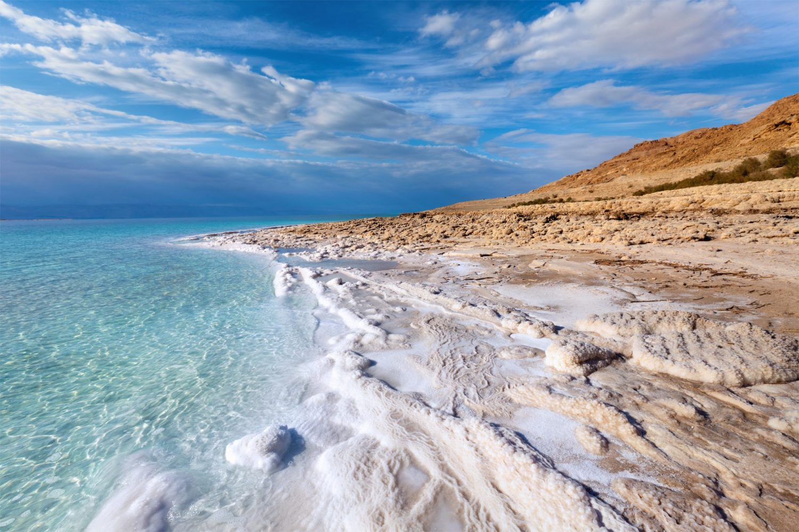
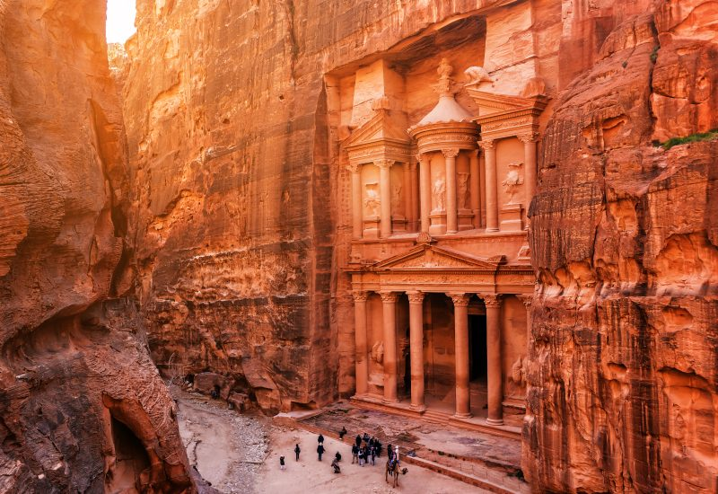

We highlight real-life examples of tourism in Jordan, showcasing its vital role in community development and the enhancement of the local economy.

We led a collaborative project between a wellness resort and a private dermatology-focused hospital at the Dead Sea, aiming to attract European visitors seeking natural treatments. One of the main challenges was aligning both partners’ operations and maintaining consistent service standards for international patients. Despite limited infrastructure and seasonal fluctuations, our strategy succeeded in establishing a trusted medical tourism experience that generated hundreds of visits annually, boosted local income, and created new job opportunities in hospitality and transport.

To re-energize tourism in Petra, we launched a digital campaign in 2023 that increased visitor numbers by 30% compared to the previous year. Working in remote areas presented challenges, including limited internet access and engaging the local community in digital storytelling. Despite that, the campaign inspired youth-led tourism initiatives—such as guided tours, cultural shows, and handmade crafts—boosting the visitor experience and supporting the local economy.